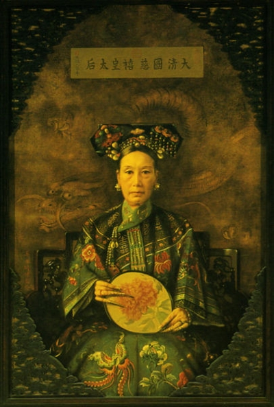

Trong số những nhân vật nữ được gọi là có tài trí, có thủ đoạn, ảnh hưởng đến lịch sử hơn 2000 năm của xã hội phong kiến Trung Quốc, có hai nhân vật quan trọng nhất và lừng lẫy nhất. Đó là Võ Tắc Thiên – “Nữ hoàng đội vương miện” thời kỳ đỉnh điểm của xã hội phong kiến, Tây Thái Hậu Diệp Hách Na La thị - “Nữ hoàng không vương miện” của triều Thanh.
Tây Thái hậu là người Mãn Châu, họ Diệp Hách Na La Thị. Trước khi Tây Thái hậu lên nhiếp chính triều Thanh danh hiệu rất cao: Hoàng Thái hậu “Từ Hi đoan hựu khang di chiêu dự trang thành thọ cung khâm hiến sùng hi” (hiền từ hạnh phúc, công minh ngay thẳng, bảo dưỡng khỏe mạnh, sắp đặt rõ ràng, trang trọng thành thực, kính cẩn tuổi thọ, kính trọng dâng tặng, hoàn toàn vui vẻ). Sau khi chết, lại thêm thiệu hụy cho bà là “hiếu khâm” (kính trọng và hiếu đễ), “phối thiên hưng thánh hiển Hoàng hậu” (Hoàng hậu xứng đáng trời ứng thánh hiển). Danh hiệu cao quí này rất khó đôc nên mọi người chỉ lấy hai chữ phía trước, gọi là Từ Hi Thái hậu.
Từ Hi Thái hậu là quí phi của Hoàng đế Hàm Phong Văn Tông triều Thanh. Thanh Mục Tông mẹ của Hoàng đế Đồng Trị, Thanh Đức Tông dì của Hoàng đế Quang Tự. Bà thông qua thủ đoạn phát động chính biến Tân Tây, buông rèm nghe chính sự, dạy chính sự, thao túng đại quyền thống trị hai triều Đồng Trị và Quang Tự kéo dài 48 năm, trở thành nhân vật lịch sử quan trọng số một đối với quốc gia và nhân dân, thậm chí còn ảnh hưởng sâu xa đến các quốc gia chung quanh, đánh dấu một thời hiển hách trên lịch sử cận đại Trung Quốc.
Trong suốt 48 năm Tây Thái hậu nắm đại quyền triều chính, diễn ra ba cuộc chiến tranh: chiến tranh Trung – Pháp, chiến tranh Trung – Nhật, tám nước liên minh xâm phạm Trung Quốc, kết cục đều lấy triều đình Thanh ký kết điều ước mất quyền nhục nước, cắt đất bồi thường, chấm dứt chiến tranh. Trong thời kỳ ba lần chiến tranh, vừa đúng thời điểm Tây Thái hậu 50, 60, 70 tuổi, mặc dù đương đầu với quốc nạn, nhưng bà vẫn làm lệ chúc thọbiểu thị quyền thế và hư vinh cá nhân. Suốt cuộc đời của bà, trên chính trị - ngược dòng lật đổ thoái lui, trong cuộc sống – xa xỉ cực độ, trước sau tôn vinh một chữ “quyền”. Chương Thái Viêm, nhân sĩ cách mạng giai cấp tư sản đã từng làm một câu liễn đối:
“Kim nhật đáo Nam uyển, minh nhật đáo Bắc hải, hà nhật táo đáo cổ Trường An? Thân lê dân cốt huyết toàn khô chỉ vi nhất dân ca khánh hữu.
Ngũ thập cắt Lưu Cầu, lục thập cắt Đài Loan, nhi kim hựu cắt Đông nam tỉnh! Thống xích huyện bang kỳ ích thích, mỗi phùng vạn thọ chúc cương vô”.
(Hôm nay đến Nam Uyển (phía nam vườn vua), mai đến Bắc hải (biển phía Bắc), ngày nào lại đến Trường An xưa? Than lê dân xương máu đều khô, chỉ vì có một người hát mừng.
Năm mươi cắt Lưu Châu, sáu mươi cắt Đài Loan, và nay lại cắt ba tỉnh miền Đông! Đau giới hạn đất nước huyện Xích càng thêm buồn, mỗi dịp vạn thọ chúc biên giới).
Câu liễn đối này nói lên điều quan trọng nhất, nêu rõ Từ Hi Thái hậu một mặt áp bức bóc lột nhân dân lao động, một mặc thỏa hiệp thối lui đối với chủ nghĩa đế quốc xâm lược để chúng gây nên tội ác nhục nước ngược dân. Có thể nói, lịch sử thống trị của Tây Thái hậu gần nửa thế kỷ chính là lịch sử tai ương khủng khiếp của nhân dân Trung Quốc.
Để hiểu được điều này, hãy sơ lược nhằm thấy được con người và việc làm của bà.
Tôi lập làm đế phụ hứa hôn
Ngày mùng 5 tháng 12 năm Đồng Trị thứ 3 (tức năm 1874), gió Bắc thổi mạnh, khói mây mịt mù, một trần tuyết lớn ập xuống. Chưa đến xế chiều, bầu trời bắt đầu u ám, nhà trọ, cửa hiệu, người bán hàng rong v.v….hàng xóm kinh đô, đã thu dọn từ sớm, đóng tất cả cửa.
Chính trong trận cuồng phong dữ dội này, trong thành Tử Cấm, dường như có việc gì đó lớn đang diẽn ra. Trong ngoài các cửa cung, Thị vệ dày đặc, trong cung nhiều Thái giám, bố trí nghiêm mật, trạng thái rất khác ngày thường. Quân cơ xứ đã tiếp di chỉ của Từ Hi Thái hậu, lệnh điều chuẩn quân Lý Hồng Chương sủng thần của bà vào kinh gấp, đồng thời tăng thêm bổng lộc cho Đại thàn Phủ nội vụ phòng bị Đại nội, triệu tập Vương công Đại thần vào cung, mở ra hội nghị khẩn cấp
Tất cả Vương công Đại thần: Thuần thân vương Di Tông, Cung thân vương Di Tố, Thuần thân vương Di Hoàn, Phù quận vương Di Tuệ, Tuệ quận vương Di Tường, Đại thần ngự tiền, Đại thần quân cơ, Đại thần phủ nội vụ v.v…, tổng cộng có hơn 30 người nhanh chóng vào trong cung. Đến nơi thấy trong ngoài cung đình đèn sáng rực rỡ, bóng người di động, không khí cặng thẳng, không khỏi kinh ngạc, mỗi người mang một tâm trạng lo sợ riêng, run cầm cập, căng thẳn đi đến điện Dưỡng Tâm. Từ An Thái hậu (tức Hoàng hậu của Hoàng đế Hàm Phong, thường gọi là Đông Thái hậu), Từ Hi Thái hậu đã ngồi đối mặt trong điện Dưỡng Tâm, sắc mặt sầu thảm.
Từ Hi Thái hậu mặc trường bào ( áo dài) hoa vàng nền tím, ngoài choàng áo gi-lê qua đầu gối, đôi vạt áo trước màu đen, trong tay cầm một cái ống khói màu vàng làm bằng trúc, cất tiếng nói: “Tôi gọi các vị vào đây, là có một việc lớn phải bàn bạc cùng các vị: bệnh tình Hoàng thượng trầm trọng, xem ra khó khỏi. Nghe nói Hoàng hậu có mang, không biết là trai hay gái, cũng không biết ngày nào, phải chuẩn bị Hội nghị lập người kế thừa ngôi vị Hoàng đế, để tránh sự lúng túng khi đến lúc”.
Việc quá bất ngờ, các Vương công Đại thần hoàn toàn không chuẩn bị suy nghĩ, nhất thời không người nào mở miệng. Tây Thái hậu giục hỏi ba lần, Cung thân vương Di Tố mới cúi đầu đáp: “Hoàng thượng tuổi đang độ khỏe mạnh, bệnh hoạn nhất thời từ từ sẽ hồi phục. Vấn đề lập người kế thừa có thể chậm chậm rồi Hội nghị”.
Lúc này, Từ An Thái hậu đang ngồi đối diện với Từ Hi Thái hậu, không thể chờ đợi được, vừa khóc vừa nói: “Tôi không ngại gì mà không thực báo, Hoàng đế đã băng hà. Các vị nhanh chóng bàn bạc phải lập ai làm người kế thừa”. Lời của Đông Thái hậu như sét đánh ngang tai, có vài người không nén được đã bật khóc nghẹn ngào. Tây Thái hậu lên tiếng: “Trong đây không phải là nơi để khóc mất, phải lập tức quyết định người kế thừa”.
Các Vương công Đại thần, không ai dám phát biểu bàn luận trước. Cung thân vương Di Tố, người lớn tuổi nhất, đề nghị: “Thời kỳ sinh đẻ của Hoàng hậu có lẽ không còn lâu. Chi bằng tạm thời bí mật không phát tang, nếu như Hoàng hậu sinh ra Hoàng tử, tự nhiên phải kế thừa Hoàng vị, nếu như sinh ra Công chúa, thì Hội nghị lập Hoàng đế cũng không muộn”.
Từ Hi Thái hậu sau khi nghe xong không vui, lớn tiếng kêu lên: “Tải Chinh con trai Cung thân vương có thể vào chịu trách nhiệm đại thống (dòng họ lớn)”. Cung thân vương nghe xong, rất lo liền nói: “Không được, căn cứ theo thứ tự nối ngôi, phải lập Phổ Luân”. Từ Hi Thái hậu liền cướp lời: “Tộc hệ của Phổ Luân quá xa, không nên lập làm người kế thừa”. Sợ cuộc bàn luận giảm đi, hoặc sẽ sinh việc ngoài ý, bèn nhìn sang Từ An Thái hậu đề nghị: “Theo tôi, Tải Điềm con trai củaThuần thân vương Di Hoàn có thể kế thừa ngôi vị, nên lập tức quyết định, không thể chậm trễ thời gian”.
Thuần thân vương nghe Tây Thái hậu nói, lập tức cúi đầu sát đất, lắp bắp nói: “Không….Không………” liền ngã xuống hôn mê, bất tỉnh nhân sự. Tây Thái hậu gọi vài Thám giám, khiên Thuần thân vương đi. Cung thân vương Di Tố không đồng ý với ý kiến của Từ Hi Thái hậu, ông nói: “Lẽ nào lập người kế vị phải lập trưởng theo nền nếp xưa nay, cũng có thể hoàn toàn không chấp ai?” Tây Thái hậu nói: “Có thể do các Vương công Đại thần bỏ phiếu quyết định. Đông Thái hậu không có y kiến nào. Cuộc bỏ phiếu được tiến hành. Do các Vương công Đại thần đều sợ uy thế của Tây Thái hậu, kết quả, ngoài ba người Tải Chinh con trai của Cung thân vương ra, những người khác đều bỏ phiếu cho Tải Điềm con trai của Thuần thân vương, và ngôi vị Hoàng đế đã được quyết định.
Vì sao Từ Hi Thái hậu muốn lập Tải Điềm con trai của Thuần thân vương làm Hoàng đế? Bởi vì, lập người thế hệ tên chữ Phổ làm người kế thừa Hoàng đế, tức là vào kế của Hoàng đế Đồng Trị. Hoàng đế Đồng Trị có con nối dõi cho làm con kế thừa, Hoàng hậu Đồng Trị sẽ được tôn làm Thái Hậu, Từ Hi Thái hậu sẽ được tôn xưng làm Thái hoàng Thái hậu, sẽ mất đi địa vị và quyền lực. Còn Phúc Tấn (tức vợ) của Thuần thân vương là em gái của Từ Hi Thái hậu, chọn con trai của em gái làm Hoàng đế, thì có thể tình thân càng thêm thân, lại hạn chế sinh ra vấn đề quá lớn. Hơn nữa, Tải Điềm con trai của Thuần thân vương Di Hoàn chỉ mới 4 tuổi, không thể đích thân nhiếp chính, chính mình lại có thể buông rèm nghe chính sự, nắm chặt đại quyền. Chính vì vậy, Tây Thái hậu mới bất chấp công luận, độc đoán chuyên quyền.
Kết thúc hội nghị đã gần 10 giờ đêm. Lúc này, cuồng phong càng dữ dội hơn, hoa tuyết bay đầy sân, khí hậu lạnh như cắt. Trong lòng các Vương công Đại thần cũng đang nổi giông bão, run lên lập cập, muốn chạy nhanh về nhà. Nhưng, không có sự cho phép của Tây Thái hậu, nên không thể rời đi.
Từ Hi Thái hậu lo sợ thời gian càng dài càng lắm chuyện không hay xảy ra, ngay lập tức để cho Lý Liên Anh – Tổng quản Thái giám thống lĩnh 16 Thái giám, vào trong phủ Thuần thân vương ở thành phía Tây, nhanh chóng đón Tải Điềm vào cung, bà phái một đội binh sĩ theo sau, để bảo vệ thêm.
Khoảng sau giờ Thìn, cái kiệu màu vàng hạnh đẹp rực rỡ, đưa Tải Điềm mới 4 tuổi còn khóc hu hu vào trong cung. Dưới sự bảo vệ của Thái giám, Tải Điềm hành lễ trước di thể của Hoàng đế Đồng Trị, thay đổi áo mão, tiếp nhận sự chúc mừng triều đại của Vương công Đại thần. Liền theo đó ban bố một di chiếu gọi là vua Đồng Trị, đại ý nói mình vì không có con, nên không có người nối ngôi, căn cứ vào ý chỉ của hai Thái hậu Hoàng cung, nhận Tải Điềm – con trai của Thuần thân vương Di Hoàn nhận quyền thừa kế, cho làm con của Hoàng đế Văn Tông, kế thừa Hoàng vị. Như thế, Hội nghị lập người kế thừa Hoàng đế ở trong tay Từ Hi Thái hậu càng thêm hợp pháp hóa. Đồng thời, “phải mời quần thần”, Đông Thái hậu và Tây thái hậu lần thứ hai buông rèm nghe chính sự được danh chính ngôn thuận, đại quyền triệu đình vẫn cứ nắm chặt ở trong tay Tây Thái hậu.
Tục ngữ nói: “Vọng tử thành long, vọng nữ thành phụng” (Trông con trai trở thành vua, trông con gái trở thành chim phượng). Đây là nguyện vọng lớn nhất của người dân Trung Quốc từ hàng vạn năm nay. Nhưng, vì sao khi Thuần thân vương Di Hoàn nghe được Từ Hi Thái hậu đề nghị lập con trai ông làm Hoàng đế, không những không cảm thấy vui mừng, mà ngã xuống đất hôn mê? Không chỉ như thế, sau khi Tải Điềm lên làm Hoàng đế được vài ngày, Thuần thân vương Di Hoàn dâng tấu lê Từ Hi Thái hậu, cầu xin được xóa bỏ các chức tước, ông còn nói: “Vì trời đất dung chứa một vị lãng phí, vì con trai bất tài ngu dốt được ban bố trờ thành Hoàng đế, kẻ hạ thần xin được chết tại đây”. Chính trong năm đó ông qua đời. Nhưng, vì sao lập con trai ông làm Hoàng đế, Thuần thân vương lại lo sợ? Nguyên nhân sâu sắc và một nỗi khổ trong lòng khó nói nên lời.
Thuần thân vương Di Hoàn là con thứ bảy của Hoàng đế Đạo Quang đời thứ 6 triều Thanh, em trai là Hoàng đế Hàm Phong đời thứ 7. Các thời kỳ sau của triệu Thanh, nảy sinh sự tranh giành đặc biệt nghiêm trọng giữa các quí tộc cung đình của hai đời Hàm Phong, Đồng Trị, họ đấu tranh tranh quyền đoạt lợi, nhuộm máu cung đình. Năm Hàm Phong 11 (tức năm 1861), Hoàng đế Văn Tông lâm bệnh rất nguy tại Nhiệt Hà, truyền Tải Thuần – người con trai duy nhất của ông vào, và ủy nhiệm cho 8 Đại thần chính vụ giúp đỡ, gồm 5 người: Đại thần quân cơ và Di thân vương Tải Viên, Trịnh thân vương Đoan Hoa, Đại học sĩ hộ bộ thượng thư Túc Thuận. Tám vị Đại thần chính vụ giúp đỡ đại quyền quân chính trong triều, tất cả hiệu lệnh, tuyên bố năm sau đổi niên hiệu là năm “Kỳ Tường”, và tôn hiệu cho Đông Thái hậu là Từ An Thái hậu, tôn hiệu cho Đông Thái hậu là Từ Hi Thái hậu. Từ An thái hậu là người chân thật, tuân thủ hậu phi gia pháp triều Thanh, không can dự vào triều chính, không có dã tâm. Từ Hi Thái hậu lại là người nhanh nhẹn, đầy dã tâm, thừa cơ hội Hàm Phong băng hà, đưa con trai lên ngôi nắm chính quyền. Bà cùng với An Đức Hải sủng giám hợp nhau làm khổ nhục kế, phái người vào kinh liên hệ với Cung thân vương Di Tố, muốn Cung thân vương nhanh đến Nhiệt Hà chịu tang. Việc này, 8 Đại thần hết sức ngăn cản, nhưng Cung thân vương khăn khăng đến Nhiệt Hà dập đầu sát đất lạy cỗ áo quan của Thiên tử. Di Tố ở lại Nhiệt Hà chịu tang mấy ngày, đã cải trang, vào cung bí mật định kế cùng Từ Hi Thái hậu, quyết xóa bỏ 8 Đại thần. Như vậy, Từ Hi Thái hậu cùng người của Cung thân vương Di Tố, lợi dụng tiểu Hoàng đế và Thái hậu trở vê kinh trước, ngay sau khi khởi hành cỗ áo quan của Hàm Phong, cơ hội phân chia 8 Đại thần hành động, bắt 8 Đại thần giúp đỡ vụ này. Bảy ngày sau, triệu đình Thanh công bố tội trạng của Tải Viên và Túc Thuận, khiến Tải Viên, Đoan Hoa tự sát, đem Túc Thuận chặt đầu, còn 5 người kia cách chức và xung quân. Để không nhận tính hợp pháp nắm quyền của các Đại thần, Tây Thái hậu và Cung thân vương liền nói di chiếu giúp chính vụ của Hàm Phong Hoàng đế là giả truyền: “Trước khi Hoàng đế lâm chung, chỉ để cho các người Tải Viên lập Tải Thuần kế vị, nhưng chưa để cho họ giúp đỡ chính vụ. Họ đã ngụy tạo di chiếu Tiên hoàng, tội trạng rất lớn, chết vẫn chưa đền hết tội”. Sau khi giết chết Tải Viên, Túc Thuận, hai cung Thái hậu “buông rèm nghe chính sự”, Cung thân vương Di Tố được ủy làm Nghị chính vương, và làm Trưởng kíp quân cơ. Niên hiệu tân Hoàng đế cũng từ “Kỳ Tường” đổi thành “Đồng Trị”, có ý là Đông, Tây thái hậu cùng quản lý quốc gia. Việc đấu tranh tàn ác ghê người của “chính biến Tân Dậu”, đã khiến cho Thuần thân vương Di Hoàn khiếp sợ tưởng như vừa mới xảy ra.
Sau “chính biến Tân Dậu”, trên danh nghĩa là hai cung Hoàng Thái hậu “ buông rèm nghe chính sự”, thực tế Từ Hi Thái hậu riêng nắm đại quyền. Phê duyệt tấu chương, quyết định sự vụ, đều do một mình bà thao túng. Cung thân vương Di Tố lấy tư cách Hoàng quyền, tập trung đại quyền trong ngoài cung vào mình, lại rất hống hách, có lúc lại xem thường Từ Hi Thái hậu. Do đó, mâu thuẫn giữa Tây Thái hậu và Cung thân vương, ngày càng lớn, trở thành tiêu điểm đấu tranh quyền lực mới. Tháng 3 năm Đồng Trị thứ 4 (năm 1865), Hàn lâm viện biên soạn quan lại Kỳ Tường vạch tội Di Tố là “dối trá, tham ô, kiêu ngạo, lạm dụng quyền hành, làm theo cảm tình riêng”, Từ Hi Thái hậu đang muốn mượn cơ hội đổi tất cả quan chức để loại bỏ Di Tố, nhưng bị ngăn cản từ trong chủ nghĩa đế quốc Anh, Pháp, Từ Hi Thái hậu chỉ bỏ được phẩm hàm Nghị chính vương của Di Tố. Điều này cho thấy, cuộc đấu tranh Hoàng quyền còn tiếp diễn.
Lý do duy nhất Hoàng Thái hậu “buông rèm nghe chính sự” là Hoàng đế nhỏ tuổi, không thể lo liệu việc triều chính. Khi Tải Thuận Hoàng đế Đồng Trị được 14 tuổi, căn cứ vào lệ cũ, Hoàng đế phải đích thân nhiếp chính, nhưng Từ Hi Thái hậu xem quyền như mạng sống, không trả lại việc nhiếp chính. Mãi đến năm Đồng Trị thứ 11 (năm 1872), khi Tải Thuần 17 tuổi, Tây Thái hậu không thể không tuyên bố năm sau trả quyền nhiếp chính. Qua nhiều năm, vây cánh của Từ Hi đã hình thành, thế lực lớn hơn. Hoàng đế Đồng Trị tiếng là phán xét quốc chính trên thực tế, Từ Hi Thái hậu vẫn cứ năm đại quyền, luôn can dự triều chính. Gặp đại sự quốc dân, bí mật cho nội giám tra xét, sau đó dò hỏi truyền Đồng Trị răn dạy, trách ông vì sao không đến thỉnh thị (xin ý kiến). Hoàng đế Đồng Trị giống mẹ ông, tính cách kiên cường, việc mẫu hậu đã trả quyền nhiếp chính, còn đến can thiệp, tỏ vẻ không bằng lòng. Mậu hậu càng muốn ông ta bẩm báo, ông ta càng thêm giấu giếm, giữa hai mẹ con càng thêm mâu thuẫn. Từ Hi Thái hậu có lúc truyền Hoàng hậu vào trong cung, muốn bà khuyên răn Hoàng thượng. Hoàng hậu vốn cùng ý kiến với Hoàng đế, tuy bên ngoài đáp lời Thái hậu, nhưng lại lấy yêu cầu của Thái hậu bẩm báo lên Hoàng thượng, làm cho Hoàng thượng khó chịu hơn. Tây Thái hậu điều tra được sự thật, càng thêm phẫn hận. Để dễ bề nắm quyền, Hoàng đế Đồng Trị cho nội thị Văn Hỉ, Quế Bảo lên kế hoạch sửa chữa vườn Viên Minh trước đây bị liên quan Anh – Pháp thiêu hủy giữa năm Hàm Phong, để hai cung Hoàng Thái hậu tiệc tùng, nghỉ ngơi mà ít can dự vào chính sự. Cung thân vương Di Tố không biết nỗi khổ tâm của Hoàng đế, một mực khuyên can. Bị chạm đến sự phiền muộn, Hoàng đế giận dữ ra lệnh bỏ tất cả các chức vụ cũa Cung thân vương. Từ Hi Thái hậu can thiệp, kết quả, ngưng sửa vườn Viên Minh, đổi sửa Tam Hải; Cung thân vương phục chức, trông nom quân cơ. Hoàng đế Đồng Trị thất vọng, chán nãn, đã tìm đến lầu Tần quán Sở rượu xanh đèn đỏ, ăn chơi đàn điếm. Cuối cùng mắc bệnh giang mai. Ngự y trong cung không biết bệnh tình, chỉ nói là Hoàng thượng bị bệnh đậu mùa, chỉ cho uống thuốc sơ sài nên bệnh tình thêm nặng. Đầu tháng 11 năm Đồng Trị thứ 13, ngự thể không thể cử động. Đến mùa đông tế troi722, còn kính cẩn hành lễ thay Thuần thân vương Di Hoàn. Đến đầu tháng 12, Hoàng đế Đồng Trị sức lực đã cạn kiệt, Từ Hi Thái hậu mượn cớ trách mắng Hoàng hậu, muốn xử hình nghiêm, Hoàng đế lo sợ, muốn bò xuống giường đến khuyên ngân, ngã xuống đất hôn mê. Kéo dài đến ngày mùng 5 tháng 12, Hoàng đế Đồng Trị nhắm mắt xuôi tay, băng hà tại gian lò sưởi phía Đông điện Tĩnh Tâm. Đây chính là nơi xuất hiện tình cảnh đang đêm mở ra Hội nghị Vương công Đại thần, cấm cung nghiệm ngặt đã thuật ở trước.
Thuần thân vương Di Hoàn đã trải qua các việc lớn trong 13 năm “chính biến Tân Dậu”, nên hiểu Từ Hi Thái hậu xem quyền như mạng sống, thủ đoạn cay độc, ống biết khi Đồng Trị băng hà con đường phía trước thực sự khó khăn đối với mình. Điểm này, Cung thân vương Di Tố cùng rõ trong lòng, ngày thứ hai sau khi lập người kế thừa, khi đi thăm bệnh tình Di Hoàn, rất cảm khái nói: “Ông có thể giữ nguyên tước vị Thuần thân vương thì tốt rồi”. Điều làm Thuần thân vương càng lo lắng là Tải Điềm (Quang Tự) con trai bị lập làm tân Hoàng đế, dưới sự lộng quyền của Tây Thái hậu, tiếng là Hoàng đế, thực không phải là bù nhìn sao? Nếu như tương lai Tải Điềm sinh ra mâu thuẫn với Tây Thái hậu, không những Tải Điềm rất khổ, mà cả ta sẽ liên lụy. Nghĩ đến đây, Thuần thân vương Di Hoàn ở trong Hội nghị Vương công Đại thần mới nội hỏa thượng chí (lửa trong người thượng lên), ngã xuống hôn mê, ngay sau đó lại dâng tấu xin bãi bỏ tất cả chức vụ.
Đáng thương nhất là Hoàng hậu của Hoàng đế Đồng Trị. Sau khi hoàn tất nghi thức làm lễ Tải Điềm lên ngôi, Tây Thái hậu đến thẩm cung Tải Điềm, thấy Hoàng hậu đang âu sầu đau khổ, liền lên tiếng mắng: “Bà là con người dã tâm, hại chết con trai ta, còn muốn làm Hoàng Thái hậu. Người như bà mà muốn làm Thái hậu sao! Trừ phi biển khô đá nát, mới chuyển đến thân bà”. Hoàng hậu Đồng Trị khi thấy tân đế đã lập, nghĩ minh sinh con cũng không có ích lợi gì cho công việc, không lâu bèn tự sát giết luôn cả thai nhi. Người đời nghe được, không thể cầm được nước mắt.
Kinh phí Hải quân xây dựng Hoàng uyển (vườn vua)
Cuối năm Đồng Trị, người dân huyện Tiểu Điền Nhật Bản và ngư dân Lưu Cầu, gặp gió trôi giạt đến Đài Loan, bị cư dân thổ dân giết hết. Di sứ Nhật Bản phái qian6 đội đến Đài Loan tấn công cư dân thổ dân. Thuyền đến tỉnh Mân, Đại thần Thẩm Bảo Trinh đích thân đến Đài Loan và nói rằng Đài Loan là lãnh thổ Trung Quốc, Nhật Bản không được dùng binh ở đây. Quân Nhật nói Lưu Cầu chính là Nhật Bản bảo vệ, ngư dân nơi đó bị giết, Trung Quốc phải bồi thường. Thẩm Bảo Trinh tấu xin Lý Hồng Chương phái 13 đội quân đóng ở biên phòng Đài Loan, khiến quân Nhất rút khỏi Đài Loan. Di sứ Nhật Bản cùng với nha môn Thủ tướng đàm phán, bức bách Chính phủ Thanh bồi thường 350 vạn lạng bạch ngân (vàng trắng).Lưu Cầu vốn là lãnh thổ của Trung Quốc, không phải là nước bảo hộ của Nhật, Đại viên triều thành chỉ yêu cầu quân Nhật lui ra khỏi Đài Loan, không hỏi qua vấn đề thuộc về Lưu Cầu. Vì vậy, Nhật Bản nói Lưu Cầu là thuộc địa của mình, nên tùy tiện đổi làm huyện Okinawa.
Khi tiểu Hoàng đế Tải Điềm (Quang Tự) được đẩy vào Hoàng cung, chính là lúc các cường quốc phương Tây bắt đầu tiến hành mở rộng xâm lược khu vực biên cương Trung Quốc, và nước phụ thuộc, nước bảo hộ chung quanh Trung Quốc. Đầu tiên nước Nga thừa cơ hội Aguber phản nghịch ở Tân Cương, phái quân xâm chiếm khu vực Y Lê, Trung Quốc, Tả Tông Đường dẫn binh đánh bại Aguber, thu phục Tân Cương, bức bách nước Nga trả lại Y Lê, trở thành công thần muôn đời của dân tộc Trung Hoa. Tiếp theo Triều Tiên sinh ra nổi loạn, Trung Quốc phái quân giúp Triều Tiên bình loạn, Nhật Bản thừa cơ hội phái binh vào Triều Tiên, cuối cùng Thanh – Nhật ký hiệp ước, hai bên rút binh. Nhật Bản được tấc tiến thước, biến Triều Tiên thành nước bảo hộ của mình. Sau đó, Hải quân Pháp xâm lược Việt Nam, quân đội triều Thanh tấn công đóng ở phía Bắc Việt Nam, dẫn đến chiến tranh Trung – Pháp. Bước vào cuộc chiến đấu, quân Thanh liên tiếp thất bại, Từ Hi Thái hậu bèn cách chức Cung Thân vương Di Tố Đại thần cao cấp nhất quân cơ. Lại trao quyền cho Lý Hồng Chương, đàm phán cùng nước Pháp, Lý Hồng Chương bản chất hèn nhát, khi thấy người nước ngoài thì rủn cả hai chân, từ trước đến nay đối với quân xâm lược nước ngoài đều thỏa hiệp, thối lui, nhượng bộ. Lần này ông ta lại bỏ dân, không chỉ thừa nhận nước Pháp chiếm hữu toàn bộ Việt Nam, mà còn đồng ý mở cửa vùng ranh giới Việt Nam để cho người Pháp thông thương. Từ Hi Thái hậu và Lý Hồng Chương vốn cho vậy thì sẽ thái bình, nào ngờ nước Pháp xâm lược lại bội tín bỏ nghĩa, phái mười mấy hạm quân và tàu thủy lôi đột ngột tấn công ào ạt vào cảng Phúc Kiến và Vĩ Quân Trung Quốc, tấn công tiêu hủy 11 hạm quân và 19 thuyền vận chuyển của Hải quân Phúc Kiến, quan binh Hải quân tử thương hơn 700 người, toàn bộ Hải quân Phúc Kiến bị tiêu diệt. Hai nước Nhật, Pháp phân chia lợi ích thu được ở Việt Nam và Triều Tiên. Nước Anh cũng không chịu thua, bèn thừa cơ cùng lấy Miến Điện và nước Thái. Những quốc gia này, vốn thuộc về Trung Quốc, do từng triều cống đế quốc Đại Thanh hàng năm. Trong thời gian khoảng 10 năm, Tây Thái hậu hai lần “buông rèm nghe chính sự”, khi Tải Điềm làm tiểu bù nhìn, các nước thuộc về bờ cõi chung quanh Trung Quốc, liên tiếp mất gần hết, khu vực biên cương Trung Quốc trở thành món mồi ngon trước mặt quân xâm lược chủ nghĩa đế quốc. Các khu vực Đài Loan, Đông Bắc, Tây Tạng của Trung Quốc, dần dần không được an ninh, nhiều chí sĩ yêu nước buồn lòng chán nản.
Phí dụng xây dựng hải quân cao vọt, phải tập hợp quần thần tính toán trước tiền của. Lý Hồng Chương tự sắp đặt kế hoạch, liên tiếp tấu thỉnh, yêu cầu rút ra khoản tiền đã trù tính trước nhưng không được chấp thuận. Lý Hồng Chương vốn có công trấn áp thái bình thiên quốc, rất được cảm tình tốt của Tây Thái hậu, được phong làm túc nghị bá (quan cung kính kiên quyết), bèn đích thân vào triều mật thám ý chỉ nội đình. Ông tìm được Lý Liên Anh sủng giám của Từ Hi Thái hậu dò hỏi, Lý Liên Anh liền lấy việc bên trong nói thật: “Tây Thái hậu nhìn thấy Hoàng đế Quang Tự muốn trở thành người nắm quyền, có ý muốn trả lại chính sự ở yên, muốn xây một ngôi vườn, để an dưỡng, nhưng chưa biết dựa vào đâu để trù tính, lòng buốn phiền không vui. Nên gặp phải tấu mục các khoản dự trù trước của các quan, các tỉnh, thường bách bỏ không phê chuẩn hoặc ủy thác triều đình không đáp”. Lý Hồng Chương trầm ngâm một lát, suy nghĩ ra diệu kế, liền kề tai nói nhỏ với Lý Liên Anh, Lý Liên Anh liên tiếp gật đầu.
Lý Hồng Chương đã nghĩ ra diệu kế gì khiến Lý Liên Anh liên tiếp gật đầu? Vốn dĩ, ông cùng Lý Liên Anh định nghị, mượn danh mục dự trù trước xây dựng Hải quân, giao cho quan viên các tỉnh để vào chuyên khoản hàng năm bỏ ra, một nửa trong đó làm kinh phí Hải quân, một nửa làm kinh phí xây vườn, đều báo cáo tiêu dùng trong kinh phí Hải quân, đạt đến tốt đẹp cả hai. Lý Liên Anh liền lấy việc tính toán này tấu lên Tây Thái hậu, Thái hậu rất mãn ý, một mặt căn cứ vào yêu cầu của Lý Hồng Chương ban bố chỉ dụ, một mặt để cho Lý Liên Anh bắt tay chuẩn bị xây dựng khu vườn.
Hoa viên Hoàng gia vốn có của triều Thanh là vườn Viên Minh nổi tiếng, vào năm cuối Hàm Phong bị liên quân Anh – Pháp thiêu hủy, giữa năm Đồng Trị muốn trùng tu chưa thành. Ngoài ra, ở ngoại ô Tây Bắc Bắc Kinh, vườn Thanh Y, tuy bị sự phá hoại nghiêm trọng của liên quân Anh – Pháp, nhưng có ánh sáng mặt trời phản chiếu trên núi hồ, phong cảnh tuyệt đẹp, Tây Thái hậu rất thích, liền quyết định sửa chữa xây dựng lại.
Công trình được khởi công từ năm Quang Tự thứ 12, 13, do Lý Liên Anh chỉ huy, 6 năm mới hoàn công. Toàn bộ công trình tiêu hao khoảng 3600 lượng vàng, tài chính của Chính phủ Thanh mỗi năm đều thu vào một nữa. Tải Điềm Hoàng đế Quang Tự còn đặc biệt ra một chỉ dụ, lấy vường Thanh Y đổi tên thành vườn Di Hòa, ý là để cho Từ Hi Thái hậu ở đây bảo toàn nguyên khí, trưởng dưỡng đến 100 tuổi.
Diện tích toàn diện vườn Di Hòa là 290 héc ta (1 héc ta = 10.000m2), phía Bắc là núi Vạn Thọ, trước núi có xây dựng hành lang dài, điện Bài Vân, lầu Phật Hương, biển Trí Tuệ, phía sau núi có rừng trúc xanh, khung cảnh yên tĩnh. Góc Đông Bắc có vườn thú vị hài hòa, đặc điểm giống vườn rừng phương Tây. Buổi sáng sớm ánh mặt trời phản chiếu lên núi Vạn Thọ là hồ Côn Minh, điểm giữa hồ nối liền với các khóm phụng hoàng thuyền tiệc triều Thanh, đình Tri Xuân, gồm 17 nhịp cầu, còn có thể trồng sen hái hoa. Một nửa phía Tây của hồ Côn Minh là bờ đê dài, trồng đầy cây liễu, có 4 cầu Ngọc Đới, có thể đi bộ tên bờ đê, lại có thể xuống thuyền thả trong hồ. Cảnh vật toàn khu vườn quanh co nhiều đoạn, thật là trong vườn có vườn, ngoài cảnh có cảnh rất tuyệt diệu.
Từ Hi Thái hậu hân hoan vui vẻ, Lý Liên Anh cho xây dựng trong vườn một đài kịch lớn nhất nước lúc bấy giờ. Gồm có ba tầng cao 21m, tầng trên có bức hoành viết “khánh diễn xương thần” (diễn mừng thần thịnh vượng), bức hoành tầng giữa ghi “thừa bình dự thái” (thái bình vui vẻ), bức hoành tầng dưới là “hoan lư vinh lộc” (trưng bày vui vẻ, vinh dự hẳn lên). Vũ đài tầng giữa, tầng dưới đều có sàn diễn hoạt động, diễn viên có thể biểu diễn cảnh từ trên trời rơi xuống, hoặc từ trong đất chui ra. Bên dưới sàn của vũ đài tầng dưới có một giếng nước, một ao nước, có thể dùng làm nguồn nước khi phân bố cảnh. Đối mặt đài kịch lớn là điện Di Lạc, đây là nơi để Tây Thái hậu ngồi xem kịch, quả đúng là có công nghiên cứu khéo léo, không có sự xa hoa nào sánh bằng.
Lại nói Hải quân biển Bắc, chi phí xây dựng đều có trình bày cho tất cả mọi người. Lý Hồng Chương mua vài hạm chiến, mộ vài ngàn lính hạm, mới dâng tấu biểu báo cáo xây dựng Hải quân. Dâng chỉ phái Thuần thân vương Di Hoàn đến Thiên Tân duyệt binh, Lý Hồng Chương phái nhân viên bố trí. Giữa đường tiếp được mật thư, Lý Hồng Chương lại vời đến yêu cầu ủy viên nhận làm thuộc hạ, bên trong Hành Viên bố trí một căn phòng khác thường. Lý Hồng Chương đích thân kiểm tra. Thuần thân vương đến Thiên Tân, Lý Hồng Chương đích thân đón tiếp. Sau khi yết kiến Thuần thân vương, Lý Hồng Chương liền ân cần hỏi thăm “tùy viên” bên cạnh Thuần thân vương, người kia cung kính đối với Thuần thân vương. Sau đó vào Hành Viên, dẫn “tùy viên” áy vào phong trong tinh xảo. Các ủy viên thuộc hạ của Lý Hồng Chương, đếu không biết tình hình bên trong. Thì ra, “tùy viên” chính là Lý Liên Anh Tổng quản Thái giám, tên tuổi lừng lẫy, sủng giám của Từ Hi Thái hậu. Căn cứ vào gia pháp triều đình Thanh, Thái giám nội kinh không thể lìa kinh; trái lại, thì xử đúng pháp. An Đức Hải Tổng quản nhiệm kỳ trước Lý Liên Anh, được sủng giám của Tây Thái hậu, được Từ Hi Thái hậu đặc hứa, để cho sử dụng long bào của Hoàng đế Đồng Trị làm danh, lìa kinh du lịch Giang Nam. Trên đường đi khi qua Sơn Đông, do Cung thân vương Di Tố mời được Từ An Thái hậu đặc chỉ, khiến tuần phủ Sơn Đông ở Bảo Trinh chém đầu An Đức Hải. Từ Hi Thái hậu là người năm quyền thiên hạ, còn người quản “gia pháp Tổ lập ra” vì sao lại ra lệnh cho Lý Liên Anh Tổng quản Thái giám làm “tùy viên” của Thuần thân vương, cùng đi đến Thiên Tân tuần duyệt. Sứ mệnh của Lý Liên Anh, hoàn toàn không phải là tra duyêt Hải quân biển Bắc, mà là vì sắp xếp kinh phí xây dựng khu vườn cho Tây Thái hậu.
Khi Lý Hồng Chương đưa Lý Tổng quản vào phòng trong. Lý Liên Anh nhìn khắp một lượt, lấy việc sửa vườn Di Hòa khai ra mọi thứ hạng mục nói cho đối phương nghe, và ngầm chỉ Tây Thái hậu rất mãn ý đối với khu vườn. Lý Hồng Chương đương nhiên hiểu ngay, gật đầu liên tiếp.
Qua hai đêm, Thuần thân vương đến sân trường duyệt, Lý Liên Anh theo sau hầu. Lý Hồng Chương truyền quân lệnh, Hải quân tập hợp đông đủ hội thao, hạm đội diễn ra lúc phân lúc hợp, hoặc dọc hoặc ngang, trong mắt Thuần thân vương chỉ thấy được xen kẽ chỉnh tề có thứ tự, rất là uy nghiêm. Nhưng Hải quân có thể lâm trận không? Sức chiến đấu như thế nào? Đối với Thuần thân vương, thì như người mù xem kịch. Kiểm duyệt xong, Thuần thân vương khen vài câu, Lý Hồng Chương vuốt râu mỉm cười. Chi phí trường duyệt này rất nhiều, việc trở về kinh của Thuần thân vương và Lý Tổng quản, đương nhiên phải sắp xếp tốt đẹp. Tất cả những việc này, toàn bộ đều báo tiêu trong kinh phí Hải quân, ngay cả nhân viên làm việc dưới tay Lý Hồng Chương đều kinh ngạc, lắc đầu thở dài.
Hoàng đế ra “mật chiếu” thay đổi pháp chế
Năm Quang Tự thứ 14, Hoàng đế Quang Tự đã 18 tuổi, hôn nhân sắp đến, lập Hoàng hậu là việc lớn. Trước đây, khi lập Hoàng hậu Đồng Trị, Từ Hi Thái hậu vốn chủ trương lập con gái của Phụng Tú, Đông Thái hậu Từ An lại quyết định lập con gái của Sùng Kỳ lớn tuổi làm Hoàng hậu, sau đó thường này sinh với Từ Hi Thái hậu, đến chết mới thôi. Để lập Hoàng hậu cho Hoàng đế Quang Tự, Từ Hi Thái hậu chọn con gái của Quế Tường – em trai bà, tuổi bằng Hoàng đế Quang Tự, lập làm Hoàng hậu, và phong cho hai người con gái của Thị lang Trương Tự làm Cẩn tần và Trân tần. Tây Thái hậu cho rằng, chọn cháu gái của mình làm Hoàng hậu của Hoàng đế Quang Tự (cháu trai), tình thân càng thêm thân, có thể lợi dụng cháu gái của mình giám sát và khống chế Hoàng đế, ngăn ngừa việc Hoàng hậu Đồng Trị tái diễn.
Tháng 2 năm Quang Tự 15 (năm 1889), Hoàng đế cử hành đại hôn lễ. Hoàng hậu và gia tộc phi tần, không ít người được phong quan tiến tước. Tất cả sắc bảo sắc phong, đưa đón lễ nghi, triều giá biểu diễn ca nhạc, lễ biếu tiệc tặng, dều dựa vào lễ cũ của các triều trước, phong cách cuối cùng của Hoàng gia, cũng làm cho Tây Thái hậu quan tâm.
Hoàng đế cử hành hôn lễ xong, Từ Hi Thái hậu đành tuyên bố bắt đầu ngày 4 tháng 3 năm 1889, Tải Điềm đích thân nhiếp chính, bà từ đây không quản lý việc triều đình, bà muốn nói, mình đã lớn tuổi, tinh lực suy giảm, không có sức để quản lý sự việc. Tự mình miễn cưỡng quản lý thay rất nhiều năm, cảm thấy mệt mỏi, nên quyết định buông bỏ tất cả việc triều chính, để cho Tải Điềm làm chủ, bà sẽ vào vườn Di Hòa để ở, để an dưỡng tuổi già. Bà nói rất hay, trên thực tế lại không buông bỏ việc triều chính. Việc lớn nhỏ trên triều, Tải Điềm mỗi ngày phải bẩm báo cho bà, để bà quyết định xử lý như thế nào. Ngay cả người theo hầu bên cạnh Hoàng đế, cũng do mật thám của Tây Thái hậu lựa chọn, sắp xếp, thêm vào đó nội cung do cháu gái bà giám sát, mỗi cử động của Hoàng đế, Tây Thái hậu đều rõ như chỉ bàn tay. Việc đích thân nhiếp chính của Tải Điềm, hữu danh vô thực. Hoàng đế Quang Tự bắt đầu chú ý, đối với Tây Thái hậu không quá ngang bướng. Trong vài năm, trong ngoài đếu yên ổn.
Ngày 10 tháng 10 năm Quang Tự thứ 20 (năm 1894), là lễ đại thọ Từ Hi Thái hậu tuổi 60. Khi đại thọ Tây Thái hậu 40 tuổi, lúc Hoàng đế Đồng Trị bệnh, mẹ con mâu thuẫn nhau, lại phát sinh chiến tranh Đài Loan, Lưu Cầu, rồi mất trắng Lưu Cầu, tinh thần không vui, không làm lễ chúc mừng. Khi đại thọ 50, lại vào lúc chiến tranh Trung – Pháp, quạn Thanh thất bại liên tiếp, Lý Hồng Chương ký kết điều ước; chiến tranh Phúc Kiến và Vĩ Hải, cả cánh quân Mẫn Hải bị tiêu diệt. Lúc bấy giờ tuy cũng làm lễ chúc thọ Tây Thái hậu, nhưng chủ ý chỉ sửa điện Thể Hòa, cung Dục Khôn, để bà đón nhận lễ chúc mừng, không có yến tiệc diễn kịch, cuối cùng cảm thấy không hài lòng. Lần này là “hoàn chỉnh thọ” 60, một “hoa giáp” (tuổi 60), vả lại vài năm trở lại đây “bốn biển thái bình, quốc thái dân an”; nên “lễ khánh chúc vạn thọ”, nhất định phải làm rất long trọng. Trước đó hai năm, Hoàng đế Quang Tự ban bố thượng du, mỗi địa phương phải chuẩn bị đầy đủ, và đặc biệt thành lập chổ làm lễ, chuyên ti biện lý tuyên bố lễ chúc mừng.
Hoạt động lễ chúc mừng lần này, bắt chước lệ xưa thời Khang Hi, Càn Long (ở đời Thanh, Tây Thái hậu thống trị Trung Quốc kéo dài 48 năm, thời gian độc trị dài cũng xác thực gần Khang Hi, Càn Long). Trong ngoài cung đình tiến hành sắp xếp phân bố. Từ Đại nội đến vườn Di Hòa, hai bên đường đều phải trang hoàng sửa sang, phải bắc lều đèn, tô điểm cảnh vật. Xây dựng kinh đàn dọc theo đường, do Tăng Lạt-ma phúng tụng kinh cầu thọ. Trong cung và vườn Di Hòa dựng cổng chào lớn, chuẩn bị diễn kịch nhiều ngày. Ngoài ra phải chuẩn bị tổ chức yến tiệc chúc mừng Lễ đại thọ lần này, chuẩn bị mất hơn một năm, sử dụng lượng lớn sức người, sức của khiến người kinh sợ. Trong đó, chuẩn bị trước 300 vạn lượng bạch ngân (vàng trắng) trong kinh phí quốc khố; quan viên văn võ Vương công tôn thất, quan lại trong kinh, tướng quân đốc phủ các tỉnh tự động “quyên góp” hơn 298,15 vạn lượng bạch ngan. Đây chỉ là những gì ghi lại có thể kiểm tra, còn không biết bao nhiêu chi phí ngoại sổ khác nữa. Tây Thái hậu hướng đến quan viên trong ngoài kinh tìm “cổng vật” của họ niều không kể hết.
Nhưng, trời không làm đẹp lòng người. Ngay lúc Tây Thái hậu làm đại lễ chúc mừng vạn thọ, quân phiết Nhật Bản mượn sự kiện Đảng Đông Học Triều Tiên, xuất binh Triều Tiên, bất ngờ tấn công quân đội triều Thanh và diễn ra “cuốc chiến tranh Giáp Ngọ Trung – Nhật” nổi tiếng trên lịch sử. Ngày 23 tháng 6 năm ấy (tức ngày 25 tháng 7 năm 1894), Nhật Bản không tuyên mà chiến, ở mặt biển vùng phụ cận phong đảo bên ngoài cửa Nha Sơn tấn công thương thuyền binh vận hiệu Cao Thăng triều Thanh, đánh chìm thuyền, hơn 700 Hải quân trên thuyền gặp nạn. Mùng 1 tháng 7 (ngày 1 tháng 8 năm 1894) Trung – Nhật chính thức tuyên chiến. Tướng lĩnh quân Thanh Diệp Chí Siêu đóng ở Triều Tiên, không chiến đấu và buông bỏ Nha Sơn, lui giữ Bình Nhưỡng. Tuy có sự chống trả ngoan cường của Tổng binh Tả Bảo Quí, nhưng ngày 16 tháng 8 (ngày 15 tháng 9 năm 1894), Lục quân nước Nhật tấn công chiếm Bình Nhưỡng. Hai ngày sau, hạm đội Nhật Bản tiến vào xâm phạm mặt biển Đại Đông Cấu cửa sông Áp Lục, dẩn đến cuộc chiến đấu dữ dội trên biển Hoàng Hải. Chiến sĩ Hải quân biển Bắc anh dũng chiến đấu, Thống soái bị thương nặng ở Nhữ Xương, “rất xa” 4 hạm chiến bị đánh chìm, vài trăm quan binh dưới trướng Đặng Thế Xương oanh liệt hy sinh cho Tổ quốc. Ngày 26 tháng 9 (ngày 24 tháng 10 năm 1894), quân Nhật vượt sông Áp Lục, xâm nhập các vùng bán đảo Liêu Đông, tiếp tục chiếm lĩnh vùng Đại Liên, Lữ Thuận. Móng sắt quân xâm lược Nhật Bản đã giày xéo vùng lãnh thổ rộng lớn 3 tỉnh miền Đông Trung Quốc.
Bất chấp cuộc chiến tranh nước bại dân mất, Lễ chúc thọ của Từ Hi Thái hậu vẫn cứ tiến hành. Ngoài mặt, tuy bà hạ chỉ, lễ chúc mừng lần này “tất cả khoản chi dùng, phải hết sức tiết kiệm, nhưng trên thực tế, diễn kịch liên tiếp trong cung 3 ngày, Vương công Đại thần không ngừng nghỉ tháp tùng xem, các bá quan văn võ chúc thọ và sứ lễ nước ngoài, đều được mời dự tiệc trong cung.
Chiến tranh Giáp Ngọ, Tây Thái hậu làm đầu chúa đi đến thỏa hiệp nhượng bộ, cuối cùng đến thảm bại, ký kết “điều ước Mã Quan Trung – Nhật” mất quyền nhục nước. Nội dung thừa nhận Nhật Bản khống chế Triều Tiên, cắt một loạt bán đảo Liêu Đông, Đài Loan, Bành Hồ, bồi thường quân phí Nhật Bản 20 ngàn vạn lượng bạch ngân, mở cửa biển thông thương và lập xưởng v.v… Điều nghiêm trọng nhất là Trung Quốc hóa thành vùng bán thực dân, khiến đấ nước đứng trước nguy cơ phân chia dân tộc, chia xẻ cho các cường quốc.
Ký kết “điều ước Mã Quan”, kích thích sự phản đối dữ dội của nhân dân các tầng lớp khắp cả nước, dẫn đến sự can thiệp của các nước Nga, Pháp, Đức; cuối cùng, Chính phủ Thanh tăng thêm 3000 vạn lượng bạch ngân bồi thường cho Nhật Bản chuộc lại Liêu Đông. Ngay sau đó, 3 nước đã có công giúp đỡ Trung Quốc lấy lại Liêu Đông, dấy lên làn sóng phân chia Trung Quốc. Trước tiên là nước Đức, mượn cớ hai Giáo sĩ truyền đạo bị giết ở Sơn Đông, xuất binh chiếm lĩnh vịnh Giao Châu. Một tháng sau, nước Nga lại đánh vào khẩu hiệu liên minh cùng Trung Quốc, xuất binh chiếm lĩnh Đại Liên và Lữ Thuận, khống chế vùng Đông Bắc Trung Quốc. Nước Pháp thì bảo vệ Vân Nam và Lưỡng Quảng; Nhật Bản lại chiếm cứ Phúc Kiến; nước Anh lại cưỡng bức cho thuê uy bảo vệ biển, mở rộng phạm vi quản lý Cửu Long. Nước Mỹ đang đánh dữ dội với Tây Ban Nha, đến trễ một bước, liền đưa ra chính sách “mở mang cửa nhà”, yêu cầu “thấm đều lợi ích”. Trong vài năm, đế quốc Đại Thanh liên tiếp mất thầy mất đất, khiến Hoàng đế Quang Tự lo lắng suy nghĩ cấp bách chính sách nước mạnh ức hiếp cai quản.
Lúc này, xuất hiện phong trào Khang Hữu Vi, do Lương Khải Siêu làm đầu, nhất định cải cách tư tưởng phần tử tri thức, mở cuộc vận động chủ nghĩa cải lương giai cấp tư sản, mưu tính cứu nước, yêu cầu triều đình nghĩ ra biện pháp mới, khởi lên tiếng vang dữ dội trong xã hội. Hoàng đế Quang Tự thấy được tình thế này, trong lòng rất vui, quyết tâm lọi dụng cơ hội, thực hành biện pháp suy nghĩ mới. Dưới sự bảo vệ và tham gia của Ông Đồng Hòa thầy của Hoàng đế, là người của Khang Hữu Vi, Lương Khải Siêu được đề cử và tiến cử cho Quang Tự, trở thành trợ thủ đắc lực tiến hành việc sửa đổi pháp chế của ông ta.
Để nhận được sự bảo vệ của Từ Hi Thái hậu, Hoàng đế Quang Tự chuẩn bị trước việc sửa đổi pháp chế, đến vườn Di Hòa bẩm rõ với Thái hậu, Thái hậu không tỏ vẻ cản trở, chỉ nói: “Sửa đổi pháp chế cũng phải cẩn thận, nhưng chớ trái với pháp chế của Tổ tiên, chớ làm tổn hai quyền thế của Mãn Châu”. Kỳ thực, Tây Thái hậu đã ngầm phản đối việc sửa đổi pháp chế, chỉ vì tình thế lúc bấy giờ bức bách, không thê không công khai phản đối. Bà đã thầm nghĩ, một khi Tải Điềm làm hỏng việc, bà hoàn toàn không làm khách. Như thế, Hoàng đế Quang Tự một mặt đích thân duyệt đọc sách vở và văn chương của những người Khang Hữu Vi, lấy những tư tưởng mới của họ làm cơ sở; mặt khác bảo vệ hoạt động của họ, cho họ làm một chức vụ nhất định, đưa ra các biện pháp chủ trương cụ thể. Hoàng đế Quang Tự còn nhiều lần triệu kiến phái nhân sĩ cải lương của Khang Hữu Vi, và cùng họ bàn bạc nghiên cứu vấn đề có thể gặp trong việc sửa đổi pháp chế, đem tấu chương của họ phân phát cho các Vương công Đại thần nha môn Tổng lý tiến hành thảo luận, muốn họ biểu thị thái độ rõ ràng. Đối với các Vương công Đại thần bảo thủ, phản đối tiến hành sửa đổi pháp chế thì phản bác và lên án.
Ngày 11 tháng 6 năm Quang Tự thứ 24 (năm 1898), Hoàng đế Quang Tự căn cứ theo ý nguyện của phái cải lương giai cấp tư sản, ban bố chiếu thư “minh định quốc thị” (nước định rõ ràng đúng), đến toàn quốc sửa đổi pháp chế. Đến ngày 12 tháng 9, trong thời gian 3 tháng, căn cứ vào chủ trương sửa đổi pháp chế của nhóm người Khang Hữu Vi đề ra, liên tiếp ban bố hơn 100 chỉ dụ, yêu cầu mỗi vùng mỗi bộ chấp hành nghiêm túc. Ni65 dung chủ yếu của những chỉ dụ này là: xây dựng Tổng cục công nông thương, bảo vệ và khuyến khích sản xuất công nông nghiệp, thành lập Tổng cục khoảng vật, sửa đường sắt, mở khu khai thác quặng; cải cách tài chính, dự toán và quyết toán biên chế mỗi năm; đề xướng làm báo chí, hứa cho nhân dân dâng thư bàn việc, cho nhân dân xuất bản, tự do ngôn luận nhất định; sữa định qui chế và điều lệ pháp luật, loại bỏ những quan viên và nha môn bất tài, vô dụng; thiết lập hình thức học đường mới, học tập văn hóa theo khoa học phương Tây, cải cách chế độ thi cử, khuyến khích phát minh khoa hoc v.v…
Hàng loạt chủ trương cải cách sửa đổi pháp chế này, có sức tấn công chế độ chuyên chế phong kiến, gặp phải sự phản đối của nhiều Đại thần ngoan cố bảo thủ, đặc biệt trong đó là Từ Hi Thái hậu. Ngày thứ năm sau khi Hoàng đế Quang Tự ban bố chiếu thư “minh định quốc thị”, Tây Thái hậu liền ra 3 chỉ dụ cưỡng bức Tải Điềm: một là bỏ tất cả chức vụ của Ông Đồng Hòa; hai là Đại thần hai phẩm văn võ trở lên mới nhận nhiệm vụ đều phải đến chỗ Tây Thái hậu tạ ân; ba là Tổng đốc trực tiếp gánh vác trách nhiệm phái Vinh Lộc. Ba chỉ dụ này, như 3 si75 dây thừng buộc chặt Hoàng đế Quang Tự lại không cho khởi lên, khiến việc sửa đổi pháp chế không được tiến hành.
Để đả phá sự bao vây và ngăn cản của phái ngoan cố, Hoàng đế Quang Tự tiến hành phản kích. Ngày 4 tháng 9, ông ra lệnh bãi miễn 6 Đại thần thủ cựu Lễ bộ Thượng thư phản đối việc sửa đổi pháp chế, ra lệnh cho Đàm Tự Đồng, Dương Nhuệ, Lâm húc, Lưu Quang Đệ phái cải lương làm quân cơ ở Chương Kinh. Căn cứ vào kiến nghị của những người Khanh Hữu Vi, truyền gặp Viên Thế Khải, đưa ông ta từ một đạo viên lên làm Thị lang, chuyên công tác luyện binh.
Từ Hi Thái hậu thấy Hoàng đế Quang Tự dám đối kháng cùng bà, rất nổi giận, quyết định sử dụng biện pháp quả đoán. Bà cùng với Vinh Lộc – người thân tín bàn bạc định đoạt, chuẩn bị nghi thức tổ chức duyệt binh ở Thiên Tân. Khi Tải Điềm cùng đi duyệt binh với Tây Thái hậu liền dùng võ lực cưỡng bức Hoàng đế Quang Tự thoái vị, lập Hoàng đế khác để khống chế. Đồng thời ra lệnh Vinh Lộc lập tức điều quân võ nghị Nhiếp Sĩ Thành đóng ở Thiên Tan, điều 20 quân Đổng Phúc Trường đóng ở cửa hàng Trường Tân, cách cửa Chương Đức Bắc Kinh chỉ 40 dặm. Tình thế Bắc Kinh trở nên căng thẳng, nội bộ phái cái lương cũng một phen kinh hoàng.
Hoàng đế Quang Tự thấy vấn đề quá nghiêm trọng, ngày 14 tháng 9, cho Dương Nhuệ mang “mật chiếu” đến người của Khang Hữu Vi. Nội dung “mật chiếu” là: “Lâu nay trẫm thấy thánh ý Hoàng Thái hậu không muốn đem pháp chế sửa đổi, ……. trẫm cảm thấy thời cuộc rất khó khăn, khng6 sửa chữa pháp chế không thể cứu nước, không gạt bỏ lớp Đại thần u mê sai quấy và dùng người anh dũng thì không thể thay đổi pháp chế. Tuy trẫm đã nhiều lần hạ chỉ chỉnh đốn, và khuyên can Hoàng Thái hậu vài lần, nhưng thánh ý của Thái hậu vững chắc, cuối cùng đến vô tích sự………. Nếu muốn trẫm một sớm hạ chỉ, lấy pháp chế cũ thay đổi và gạt bỏ lớp người u mê này, thì quyền lực của trẫm chưa có đủ. Và như thế, thì địa vị của trẫm còn chưa thể bảo vệ được, hà huống các vị?..... Các vị và Lâm Húc, Đàm Tự Đồng, Lưu Quang Đệ, có thể nhanh chóng bàn bạc bí mật, sắp xếp cứu nhau. Trẫm thật không chịu đựng nổi sự mong chờ bấp bênh khẩn cấp này”.
Dương Nhuệ sau khi xem xong “mật chiếu”, giữ lại trong nhà, không truyền đến cho người khác. Hoàng đế Quang Tư sốt ruột đợi 3 ngày, không thấy tin tức gì; vào ngày 17 tháng 9 lại để cho Lâm Húc mang ra “mật chiếu” thứ hai, cho phái Khang Hữu Vi lấy danh nghĩa đi Thượng Hải báo quan, để họ nhanh chóng rời khỏi Bắc Kinh. Như vậy, hai “mật chiếu” mới cùng truyền đến trong tay người của Đảng Duy Tân.
Người của Khang Hữu Vi, Đàm Tự Đồng xem xong hai “mật chiếu”, biết tình cảnh Hoàng đế Quang Tự đang gặp nguy hiểm, khẩn trương bàn bạc kỹ càng, nghị định sử dụng biện pháp giải quyết tân gốc, phái người giết Vinh Lộc, đoạt lấy quyền binh, điều một vạn Lục binh giữa đêm vào thành đô, bao vây vườn Di Hòa, cướp Thái hậu nhốt vào thành, cho đến cuối đời. Người nhận trách nhiệm giết chết Vinh Lộc chính là Viên Thế Khải mới trước đó không lâu được gặp Hoàng đế Quang Tự và được phong làm Thị lang.
Chiều ngày 18 tháng 9, Đàm Tự Đồng bí mật đến chùa Pháp Hoa chỗ ở của Viên Thế Khải, cho ông ta xem “mật chiếu” của Hoàng đế Quang Tự, hỏi ông ta có y muốn cứu Hoàng thượng không. Lúc bấy giờ, Viên Thế Khải thề thốt chân thành, biểu thị chịu đại ân đại đức của Hoàng thượng, nhất định gánh lấy trách nhiệm cứu hộ. Đàm Tự Đồng tin là thật, liền bàn bạc kế hoạch và ủy thác cho ong, đồng thời dò hỏi Viên Thế Khải: “Vinh Lộc là người gian hùng, ông có thể đối phó được với ông ta không?” Viên Thế Khải đã có tính toán rồi, nên đáp ngay: “Giết một Vinh Lộc, như giết một con chó, có khó gì đâu!”.
Đàm Tự Đồng cùng người của Đảng Duy Tân, rất tin tưởng vào Viên Thế Khải. Sáng ngày 19 tháng 9, Viên Thế Khải lập tức đi Thiên Tân, chẳng những Vinh Lộc không bị giết, mà lúc 5 giờ chiều lại ngồi xe cấp tốc trở về Bắc Kinh, ngay đêm vào cung cúi rạp đầu yết kiến Từ Hi Thái hậu. Vốn vĩ, Viên Thế Khải về đến Thiên Tân, đem toàn bộ âm mưu bí mật của người Khương Hữu Vi báo với Vinh Lộc, Vinh Lội ngay lập tức vào kinh bẩm báo với Tây Thái hậu. Thái hậu nhận được tin tức, rất giận, lập tức từ vườn Di Hòa lên kiệu trở về cung.
Sáng sớm ngày 21 tháng 9, Hoàng đế Quang Tự chuẩn bị đi vườn Di Hòa thỉnh an Từ Hi Thái hậu, bỗng nhiên báo “kiệu loan Thái hậu vào đến cửa cung”. Tải Điềm rất ngạc nhiên, lập tức quỳ xuống nghênh đón. Thái hậu không quan tâm, trực tiếp mang vài người thân tín, đi thẳng vào thẩm cung của Quang Tự, lấy tất cả tấu chương sớ biểu mang đi, và nổi giận đùng đùng chỉ Quang Tự nói: “Ngu si, ngày nay không có ta, ngày mai làm gi có ngươi!” Từ Hi Thái hậu lập tức ra lệnh cho Lý Liên Anh đem Đảng Lĩnh Yêm, tập hợp đưa Quang Tự lên thuyền, thẳng đến Doanh Đài, giam vào điện Hàm Nguyên.
Từ Hi Thái hậu bắt giam Hoàng đề Quang Tự, sợ sinh chuyện can thiệp trong ngoài, tức khắc lấy danh nghĩa Tải Điềm ban bố chỉ dụ, đại ý nói: “Thời sự hiện tại khó khăn, nhiều việc phải xem xét, dù trẫm đã thức khuya dậy sớm, vẫn không giải quyết hết việc ….. Lấy xã tắc làm trọng, trẫm 3 lần thỉnh cầu Thái hậu chỉ dạy chính sự, mới nhận được ân chuẩn, đây chính là phúc của thần dân cà nước. Bắt đầu từ hôm nay, Thái hậu sẽ ở điện làm việc, đặc biệt ra dụ cho thần dân biết”.
Cùng lúc này, Tây Thái hậu ra lệnh nghiêm ngặt trong thành Bắc Kinh phải bắt người của Đảng Duy Tân không nương tay. Trừ Khang Hữu Vi, Lương Khải Siêu chạy trốn ra Nhật Bản, còn 6 người như: Đàm Tự Đồng, Dương Nhuệ, Lâm Húc, Lưu Quang Đệ, Khang Quảng Nhân, Dương Thâm Tú, cùng với những người khác và nhân sĩ có quan hệ ủng hộ sửa đổi pháp chế, đều bị bắt và tra hỏi. Sau 1 tuần, 6 người Đàm Tự Đồng, Dương Nhuệ… bị xử tử ở ngoài cửa Tuyên Vũ, sử gọi là “lục quân tử”. Những quan viên khác tham gia chính trị mới vào khuynh hướng sửa đổi pháp chế, có người bị cách chức, có người bị đuổi đi.
Như vậy, “Duy Tân 100 ngày” của Hoàng đế Quang Tự tiến hành, bị Từ Hi Thái hậu và phái thủ cựu ngoan cố giết hết. Tây Thái hậu chỉ dạy chính sự lần thứ ba, chính thức nắm đại quyền. Năm này là năm Mậu Tuất, sử gọi là “chính biến Mậu Tuất”.
Rời Bắc Kinh chạy trốn sang Tây hoa lê dân
Sau thất bại sửa đổi pháp chế Mậu Tuất, Từ Hi Thái hậu tuy giam Hoàng đế Quang Tự, nhưng lại không thỏa mãn, muốn hủy bỏ Tải Điềm. Vì thế, bà lấy danh nghĩa Quang Tự ban bố chỉ dụ, nói sức khỏe mình không tốt, mong quần thần bá quan tiến cử danh y. Sau đó lại mỗi ngày giả tạo bệnh án của Hoàng đế, truyền bá tin tức Tải Điềm bệnh tình nguy kịch, hồng mưu thừa cơ thuốc độc giết chết Tải Điềm, lập vua mới. Tin này truyền đến Thượng Hải, khiến các giới bàn bạc, thảo luận. Các đế quốc Anh, Nhật bảo vệ Hoàng đế Quang Tự vốn có chỗ hoài nghi, bèn đến nha môn Tổng lý triều Thanh tiến cử bác sĩ nước ngoài xem bệnh cho Tải Điềm. Tây Thái hậu không trả lời rõ ràng. Nhưng qua thái độ kiên cường của các nước Anh, Nhật, chỉ còn cách để cho bác sĩ chẩn xem. Kết quả phát hiện tình trạng sức khỏe Hoàng đế Quang Tự rất tốt, khiến dự mưu của Từ Hi Thái hậu ám hại Hoàng đế Quang Tự không thực hiện được.
Một kế chưa thành, lại sinh kế khác. Từ Hi Thái hậu và các Vương công Đại thần bàn bạc, quyết định phải lựa chọn Hoàng đế mới, đưa Quang Tự xuống. Việc lựa chọn Hoàng đế mới này, bà đã xác định, chính là Phổ Thuyên 15 tuổi, con trai của Đoan quận vương Tải Y – con trai thứ năm của Hoàng đế Hàm Phong. Lúc này, ý kiến các Đại thần không giống nhau, có người tán đồng, có người cho rằng không nên làm gấp. Cuối cùng, Tây Thái hậu trưng cầu ý kiến riêng của Vinh Lộc, Vinh Lộc lo sợ sự can thiệp của công sứ nước ngoài, kiến nghị Thái hậu sử dụng biện pháp chiết trung. Nghĩa là đem Phổ Thuyên – con của Đoan quận vương qua làm con kế thừa của Hoàng đế Mục Tông (tức Tải Thuần Hoàng đế Đồng Trị), lập làm Đại a ca (tức Hoàng Thái tử), nuôi dưỡng trong cung, đợi có cơ hội, thì sẽ lập làm Hoàng đế. Chính như thế, Từ Hi Thái hậu lại lấy danh nghĩa Hoàng đế Quang Tự, hướng đến toàn quốc ban bố chỉ dụ “lập Phổ Thuyên làm Đại a ca” vào ngày 24 tháng 1 năm 1900. Sau khi ban bố chỉ dụ, Từ Hi Thái hậu còn mời công sứ các nước vào cung chúc mừng, nhưng không thấy bóng dáng ai, Tây Thái hậu vừa tức vừa giận.
Thời gian này, đoàn vận động Nghĩa Hòa ở Sơn Đông sau 10 năm truyền bá, dần dần phát triển đến khu vực Hà Bắc, không những trai trả tham gia đoàn Nghĩa Hòa, mà các phụ nữ cũng tổ chức “chiếu đèn đỏ”. Khẩu hiệu của họ là: “Nam luyện đoàn Nghĩa Hòa, nữ luyện chiếu đèn đỏ. Phá ngã cột dây điện, tháo bỏ đường xe lửa, giết hết giặt Tây, lại cùng Đại Thanh náo loạn”. Đến giữa tháng 4, tháng 5 năm 1900, khu vực Thiên Tân và Bắc Kinh, đã trở thành thiên hạ của đoàn Nghĩa Hòa. Thành phố Thiên Tân lúc bấy giờ tuy nhỏ, nhưng đến hơn 5 vạn người tham gia đoàn Nghĩa Hòa, và Bắc Kinh lại đến 10 vạn người. Họ ngày ngày luyện võ, cơ quan sử quán nước ngoài ở hẻm dân Đông Giao đổi tên thành “đường gà gáy giết Tây”, cầu Ngự Hà đổi làm “cầu Đoạn Dương” (cầu tây đứt đoạn), treo cao cờ lớn “Tai dương” (Tây tai nạn), hô to khẩu hiệu: “giết giặc Tây”, du hành thị uy trên đường phố, khiến quân xâm lược nước ngoài khiếp sợ chạy trốn.
Đoan quân vương Tải Y một lòng muốn con trai sớm lên làm Hoàng đế, ý đồ lợi dụng sức lực của đoàn Nghĩa Hòa, đả kích giặt Tây bảo vệ Hoàng đế Quang Tự, để nhanh chóng đạt đến mục đích. Ông thông đồng với Lý Liên Anh, nhân lúc Tây Thái hậu đang buồn vì đoàn Nghĩa Hòa, nói với Tây Thái hậu: “Chi bằng công khai thừa nhận đoàn Nghĩa Hòa làm nghĩa quân, lợi dụng họ đi đánh Tây”. Từ Hi Thái hậu suy nghĩ: “Những người Tây này quả không đội trời chung cùng ta, chúng đã bảo vệ Hoàng đế sửa đổi pháp chế, sau đó phản đối việc phế vua của ta, nay lại không bảo vễ Đại a ca chúng ta. Như vậy họ hoàn toàn hướng theo Hoàng đế, không xem chúng ta ra gì”. Trong lòng tuy nghĩ thế, nhưng bà vẫn đối phó tốt với họ vì sợ sinh ra đại loạn. Để cổ động Từ Hi Thái hậu khai chiến với người Tây, Tải Y sắp đặt trò bịp, giả tạo một công sứ quán nước ngoài gọi là ngoại giao trình công hàm với Thái hậu, “muốn Thái hậu trả lại chính sự, giao đại quyền cho Hoàng thượng, phế bỏ Đại a ca, và hứa cho một vạn lính Tây vào kinh”. Từ Hi Thái hậu không phân biệt thật giả, đùng đùng nổi giận, bất chấp sự khuyên ngăn của Hoàng đế Quang Tự và Đại thần Vinh Lộc, ban bố chỉ dụ vào ngày 21 tháng 6 năm 1900, tuyên bố thừa nhận đoàn Nghĩa Hòa làm “nghĩa dân”, chính thức “tuyên chiến” với các nước.
Vì vậy, đoàn Nghĩa Hòa ở Thiên Tân, dưới sự thống lĩnh của Tào Phúc Điền, nhanh chóng tiến công vào tổ chức của các nước ở Thiên Tân, giết chết rất nhiều người ngoại quốc. Năm, sáu vạn người đoàn Nghĩa Hòa ở Bắc Kinh, lớp lớp bao vây công sứ quán nước ngoài, phát động tiến công, đánh vào trong công sứ quán nước Đức và nước Pháp, truy sát toàn bộ những nơi có người Tây, Đức, Shashanlin thư ký công sứ quán nước Nhật chết không toàn thây……
Các nước Nhật, Nga, Anh, Mỹ, Pháp, Đức, Áo Ý hợp thành liên quân 8 nước, đưa vài chục hạm chiến đến bên ngoài cửa Đại Cô, nhanh chóng tấn công chiếm cửa Đại Cô, sau đó lại tấn công vào thành Thiên Tân. Liên quân 8 nước dưới sự lãnh đạo của Qadsi Thống soái nước Đức, từ hướng Bắc tiến công vào Thiên Tân.
Từ Hi Thái hậu xưa nay chủ trương thỏa hiệp lần đầu hàng đối ngoại, không phải là phái chống đối chủ nghĩa đế quốc. Nay bà quyết định “tuyên chiến” với các nước, chỉ vì giạn mà ra. Khi đoàn Nghỉa Hòa chiến đấu với liên quân 8 nước, bà lại lo sợ. Tám ngày sau khi “tuyên chiến”, bà ra lệnh Triều thần điện báo cho công sứ các nước, muốn họ báo cáo với Chính phủ các nước, nói bà sớm muốn tiêu diệt Nghĩa Hòa, vì đoàn Nghĩa Hòa người đông thế mạnh, sợ làm loạn nên mới sử dụng biện pháp ứng cấp như thế, nhất định tiêu diệt đoàn Nghĩa Hòa.
Ở thời khắc then chốt của cuộc chiến đấu đẫm máu giữa đoàn Nghĩa Hòa với các đế quốc xâm lược, Từ Hi Thái hậu bất ngờ từ phía sau đoàn Nghĩa Hòa hạ độc thủ, bà dung túng quân Thanh đến nổ súng đoàn Nghĩa Hòa, phái người mang rất nhiều bột mì, gạo, rau cải, và nước trái cây đến cho công sứ quán các nước; phái bộ đội tinh nhuệ của Vinh Lộc bảo vệ khu công sứ quán nước ngoài. Đồng thời, ra lệnh Lý Hồng Chương làm Đài thần toàn quyền, đi cùng Nghĩa Hòa xâm lược nước ngoài.
Do Tây Thái hậu phá hoại cuộc đầu tranh phản đế của đoàn Nghĩa Hòa, khi liên quân 8 nước chiếm lĩnh Thiên Tân, càng thêm điên cuồng, đốt giết, cướp đoạt, diễn ra khắp nơi, ngày 13 tháng 8 tấn công chiếm Thông Châu. Hôm sau, trong thành Bắc Kinh nghe được tiếng pháo của liên quân 8 nước. Quan lại lớn nhỏ đều lo sợ không yên, trên dưới cung đình một phen kinh hoàng.
Đến tối, Tải Lan hốt hoảng chạy đến cung Ninh Thọ, nới với Tây Thái hậu: “Thái hậu, lính Tây đã tiến vào thành, sao không lo chạy nhanh?” Nói chưa xong, Đại thần quân cơ Cang Di xông đến, thở hồng hộc nói: “Có một đội lính Tây, đóng ờ gần đàn Thiên Tân, xin Thái hậu chạy nhanh, nếu không sẽ không kịp”. Từ Hi Thái hậu ngay đem triệu kiến Hội nghị 5 Đại thần, nhưng đợi rất lâu, chỉ có 2 người Vương Văn Thiều, Triệu Thư Kiều đến. Tây Thái hậu bất đắc dĩ nói: “Chúng ta đi đâu? Hay cùng chạy trở về nhà. Bỏ hai người mẹ già không lo liệu, thật là đáng hận!” Nói xong, thì khóc rống lên. Vương Văn Thiều lập tức lên tiếng an ủi: “Xin Thái hậu đừng quá buồn thương, thần nhất định sẽ theo cùng Thái hậu”.
Từ Hi Thái hậu ngừng khóc, quyết định tạm thời tránh mũi nhọn của người Tây. Bà muốn Cang Di lập tức chuẩn bị xe ngựa, ra lệnh cho Vinh Lộc phát binh bảo vệ, kêu Thái giám chuẩn bị thông tin Hoàng hậu cùng các phi tần ra đi. Bà lui vào hậu cung, đổi quần áo dân thường, kêu Lý Liên Anh chải tóc cho bà theo kiểu tóc phụ nữ người Hán, trang điểm giống như phụ nữ nông thôn, để dễ che tai mắt của người.
Hoàng đế Quang Tự và Hoàng hậu, các phi tần đều đến nhanh chóng chạy đến cung Ninh Thọ, Tây Thái hậu nới với Hoàng hậu và các phi tần: “Vì thời gian cấp bách, bên ngoài rất loạn, tôi chỉ có thể cùng Hoàng đế đi trước, các người không thể cùng đi, hãy lấy vàng bạc châu báu trong cung đem chôn giấu hết”.
Hoàng đế Quang Tự mặc chiếc áo dài lụa màu xanh, quần vải màu lam, tinh thần suy sụp. Khi ông thấy Cẩn phi đứng đó, liền đi qua nói nhỏ: “Em gái của ái phi còn ở lãnh cung, phải làm sao đây?” Tây Thái hậu nghe được, liền ác độc nói với Tải Điềm: “Đến nước này mà Hoàng thượng còn nhớ được yêu tinh đó sao?”. Bà quay đầu lại, nói với Thôi Bảo Quí Thái giám Tổng quản hai: “Hãy đưa Trân phi yêu tinh đến gặp tôi!” chẳng mấy chốc, Thôi Bảo Quí dẫn Trân phi tiều tụy đến. Trân phi theo lệ vấn an Tây Thái hậu.
Tây Thái hậu giả nhân giả nghĩa nói: “Lẽ ra ta phải mang cô cùng đi, nhưng vì nhiều việc náo loạn, lính hoang ngựa loạn, cô lại còn trẻ đẹp, sợ gặp ô nhục hoặc bị bắt cóc, làm mất thể diện Hoàng gia, theo lẽ cô nên tự sát cho trọn nghĩa”. Trân phi tự biết trước sau gì cũng phải chết, gan dạ nói lớn: “Hoàng đế phải ở lại kinh”. Tây Thái hậu nổi giận la lên: “Mi sắp chết đến nơi, còn dám nói lung tung như thế!” Bà trừng hai mắt đỏ ngầu, ra lệnh Thôi Bảo Quí mang Trân phi bỏ vào hậu cung đi.
Thôi Bảo Quí nhấc bổng Trân phi lên, kẹp dưới chân, đi thật nhanh về phía sau cung Ninh Thọ. Trân phi thê thảm gọi “Lý An Đạt! Lý An Đạt!” (tức gọi cách kính trong Lý Liên Anh) Lý Liên Anh dường như không nghe thấy, đứng im lặng bên cạnh Tây Thái hậu. Hoàng đế Quang Tự lòng như dao cắt, quỳ trước mặt Tây Thái hậu van xin: “Xin lão nhân gia khai ân, khoan dung cho nàng được một lần sống!”.
Từ Hi Thái hậu giận dữ mắng: “Đứng lên, bây giờ không phải là lúc để Hoàng thượng cầu xin. Cho bà ta chết đi, cũng răn đe tốt những đứa trẻ bất hiếu”. Tiếng kêu thảm thiết của Trân phi từ xa đã vọng đến. Hoàng đế Quang Tự vùng đứng lên, chạy như điên về hướng hậu cung, nhưng một vài tên Thái giám kéo trở lại. Câu chuyện bi thảm động lòng người này vào khoảng 4 giờ sáng ngày 15 tháng 8 năm 1900.
Đến 6 giờ sáng, Từ Hi Thái hậu, Hoàng đế Quang Tự, Hoàng hậu Long Dụ, Cẩn phi và Đại a ca, cùng các Thị vệ, Thái giám, cung nữ, từ trong cung đi đến cửa Thần Vũ. Ở đây các Vương công Đại thần đang quỳ đón. Tây Thái hậu lên xe ngựa lớn của Quế Tường (Đại thần quản lý doanh thần cơ, em họ của bà), Quế Tường ngồi ngoài xe; Hoàng đế Quang Tự ngồi xe của Phổ Luân Bối tử (con nhà họ Bối), Phổ Luân bước ở ngoài xe; Long Dụ, Cẩn phi lên xe của các Vương công Đại thần; các Vương công Đại thần người cưỡi ngựa, người chạy bộ, tất cả hình thành một đạo quân rầm rập, đi từ phố Cảnh Sơn Tây qua An Môn Tây, ra Tây Trực Môn, khoảng 11 giờ trưa đến vườn Di Hòa. Tại đây họ nghỉ một lát, tiếp tục đi theo hướng Tây Bắc. Nửa đêm, Từ Hi Thái hậu đến điện Tự Đại ở Quán Thị cách Bắc Kinh 70 dặm lễ bái.
Suốt 3 ngày trong cuộc hành trình về phía Tây, Tây Thái hậu và Hoàng đế Quang Tự, đêm ngủ giường lò đất, không thay đổi quần áo, chỉ ăn cháo kê cho đỡ đói. Chiều ngày 17 tháng 8, Tây Thái hậu cho kiệu xe đến tri huyện Ngô VĨnh. Được hoan nghênh tiếp nồng hậu, dâng tặng y phục đẹp. Bà phái Ngô Vĩnh truyền các châu mở ra, cung ứng sự vụ. Lưu lại thời gian ở tình Nguyên, sau đó tiếp tục đi theo đường lớn về phía Tây, đến Tuyên Hóa, qua Dương Cao, ra Đại Đồng, xuyên qua Nhạn Môn Quan, ngày 10 tháng 9 đến phủ Thái Nguyên.
Trong kho Thái Nguyên còn có kiệu loan, nghi trượng (cờ quạt, dù, lọng, vũ khí đội hộ vệ mang đi theo đế vương, quan lại cổ xưa), dụng cụ vàng bạc thời Càn Long Nam du (đi về phía Nam) và Tây tuần (tuần tra phía Tây) Thái Nguyên, mới lấy ra sử dụng, làm mới 24 mặt cờ rồng, gây ấn tượng mạnh mẽ. Thời gian ở phủ Thái Nguyên, Tây Thái hậu và Hoàng đế Quang Tự nghỉ ngơi an dưỡng 1 tháng. Sau đó Đại thần quân cơ Vinh Lộc chạy đến nơi ở, thông báo liên quân 8 nước muốn tiến vào Sơn Tây, nhân dân Sơn Tây nghèo đói, đất đai cằn cỗi, không đủ lương thực cung cấp, Tây Thái hậu quyết định tiếp tục theo hướng Tây mà tiến. Ngày 26 tháng 10 đến phủ Tây An. Trước tiên cắm lều hã trại ở vũ đài tòa phía Nam, sau đó dời đến ở tòa phía Bắc. Đây chính là nơi dung thân tạm bợ của Từ Hi Thái hậu khi chạy trốn.
Từ Hi Thái hậu trên đường từ Thái Nguyên chạy đến Tây An, tình hình đã không vội vả như từ Bắc Kinh đến Thái Nguyên. Sau đó Vương công Đại thần, tùy tùng, quan binh cũng chạy đến, hình thành đội ngũ đông đảo, hùng hậu. Thành Bắc Kinh cung cấp rượu thịt đến, Tây Thái hậu bắt đầu trở lại cuộc sống xa xỉ. Tâu không giống trong cung, nhưng ăn uống mỗi ngày đến 200 lượng bạch ngân, và hàng trăm loại rau cải. Các tỉnh phía Nam không ngừng vận chuyển tiến cống vi cá, yến sào. Các loại gà, vịt, cá, thịt thì không kể hết. Riêng phí dụng mỗi tháng phải trả cho 6 người đầu bếp ở Tây An phục vụ một mình Từ Hi Thái hậu là 200 tiền.
Ngoài ra, để muốn lung lạc lòng người, Tây Thái hậu còn đại thưởng cung giám, tùy tùng và quan binh bảo vệ xe. Ở Thái Nguyên chỉ 1 lần vào ngày 17 tháng 9 thưởng cho quan quân dẫn đường Mã Bảo Côn 1 vạn lượng, nhất bộ Sầm Xuân Huyên 2000 lượng; thưởng Ngô Vĩnh 1 lần là 400 lượng, còn thêm 2 tấm đoạn lớn.
Căn cứ vào hồ sơ ghi lại, Từ Hi Thái hậu ra đi 1 năm 4 tháng, kinh phí đã vượt qua 500 vạn lượng bạch ngân và 72 vạn gánh bột mì. Tháng 10 năm 1901, khi hai cung từ Tây An hồi loan, Từ Hi Thái hậu lấy khoảng 700 vạn tài sản riêng của các tỉnh cống hiến, lại sắm sửa 3000 chiếc.
Tây Thái hậu còn mượn cơ hội “hồi loan”, sửa chữa đường sá, xây dựng nhà cửa, xây dựng trãm đêm cung đi, làm chúc thọ lớn, hoang phí máu và mồ hôi của bá tánh. Toàn bộ hai tình Thiểm Tây và Hà Nam xây dựng “ngư đạo” (đường vua đi), mỗi dặm Anh mất vài ngàn lượng bạc, toàn bộ hành trình trên 2700 dặm, tổng cộng thành lập 37 tòa, phí dụng mỗi tòa vài chục vạn. Lý Hồng Chương Tổng đốc Trực Lệ mặc sức thâu tóm tài sản nhân dân trong tỉnh, chúng còn gửi điện cho 10 tỉnh Tô Châu, An Huy, Triết Giang, Giang Tây v.v…. mượn 68 vạn lượng bạch ngân, cung cấp chi dùng cho Từ Hi Thái hậu. Sự ra đi của Tây Thái hậu lài tai hoa cho lê dân, bá tánh.
Dịch Khuông và Lý Hồng Chương ở Bắc Kinh nghị hòa cùng người Tây 12 điều khoản. Nội dung chủ yếu: đối với công sứ, quan viên các nước bị giết, phái người xin lỗi, dựng bia kỷ niệm; đối với Vương công Đại thần triều Thanh tin dùng đoàn Nghĩa Hòa, phân biệt nặng nhẹ mà trừng phạt; phá bỏ pháo đài từ cửa Đại Cô đến Bắc Kinh, 12 căn cứ trọng điểm chiến lược từ Bắc Kinh đến cửa Sơn Hải dâng tặng cho các nước đóng quân; không cho phép nhân dân Trung Quốc có hành vi phản đế; sửa đổi chương trình thông thương đường thủy; các nước được quyền phái binh bảo vệ đóng ở khu vực sứ quán Bắc Kinh; bồi thường 4 ức 5 ngàn vạn lượng bạch ngân cho tổn thất riêng chung của các nước, triều Thanh chia trả trong 39 năm, mỗi năm lãi suất 4%, tổng cộng hớn 9 ức 8 ngàn vạn lượng, tương đương với tổng thu nhập tài chính của Chính phủ triều Thanh trong 12 năm; v.v… Từ Hi Thái hậu lo sợ lập ước lần này, sẽ ảnh hưởng đến địa vị của bà, nhưng khi các điều khoản đưa ra hoàn toàn không trực tiếp liên quan đến địa vị quyền lực của bà, chỉ thị cho Dịch Khuông, Lý Hồng Chương ký kết điều ước. Ngày 7 tháng 9 năm 1901, Dịch Khuông, Lý Hồng Chương đại diện cho Chính phủ triều Thanh cùng đại diện 11 nước, Anh, Mỹ, Nga, Đức, Nhật, Ý, Pháp, Áo, Tây, Bỉ, Hà Lan, ký kết điều ước ở Bắc Kinh trên cơ sở 12 điều. Đây chính là “điều ước Tân Sửu” – điều ước mất quyền nhục nước.
Liên tiếp kéo đổ những sự việc chưa hiểu rõ
Năm Quang Tự thứ 28 (năm 1902), Từ Hi Thái hậu quyết định đi tàu hỏa thăm Lăng Tế Đông, Tây Tổ. Thời kỳ Khang Hi, Càn Long vận nước hưng thịnh, Hoàng đế, Hoàng hậu nhà Thanh, rời kinh ngự du hoặc đi săn, là việc bình thường. Nhưng đến năm cuối Quang Tự vận nước đang nguy, ra kinh ngự du rất khó khăn, Tây Thái hậu lại đòi ngồi xe lửa thăng Lăng, càng là việc khó. Lúc bấy giờ, đến Lăng Đông và Lăng Tây không có đường sắt, phải xây dựng đường sắt 1 – 2 trăm dặm, tiêu hao rất nhiều vàng bạc và thời gian. Theo Thạnh Tuyên Hoài – Đại thần thương vụ triều đình nhà Thanh và Viên Thế Khải – Tổng đốc Trực Lệ, phải có 100 đốc công, mới có thể hoàn thành. Chỉ xây dựng đường sắt đi Lăng Tây và phí dụng thăm Lăng đã mất 200 vạn lượng bạch ngân, thêm vào đó phải xây dựng đi Lăng Đông và chi tiêu thăm Lăng, tổng cộng không dưới 500 vạn lượng. Quả thật mồ hôi và máu của lê dân Trực Lệ trong vài năm, cũng không bằng sự hoang phí của Từ Hi Thái hậu.
Sau khi ký kết “điều ước Tân Sửu”, làn sóng đấu tranh phản đế phản Thanh của nhân dân cả nước hăng hái nổi lên, sự thống trị của triều Thanh đã đến bước đường cùng. Từ Hi Thái hậu vẫn cứ sống nhởn nhơ, ăn uống hưởng lạc. Lúc bấy giờ, Dụ Canh – công sứ nhà Thanh ở Pháp hết nhiệm kỳ trở về nước, Tây Thái hậu tiếp kiến phu nhân và hai đứa con gái của ông ta, thấy họ ăn mặc và trang điểm theo phong cách Pháp thì rất thích, tặng thưởng hậu hĩ, và đem Dolingréu – trưởng nữ của họ làm người hầu cho mình. Năm Quang Tự thứ 30 (năm 1904), một đoàn kịch Nga đến diện xuất ở Bắc Kinh, Tây Thái hậu đặc biệt mời đến biểu diễn ở vường Di Hòa. Tiết mục bà thú vị nhất là thiếu nữ đi trên quả cầu tròn, khiêu vũ, biểu diễn thể dục mềm dẻo, nên yêu cầu diễn lại vài lần. Tây Thái hậu thích thú vũ điệu và điệu nhạc Valse, trong phòng ngủ của bà có máy thu băng nước ngoài rất lớn và không ít đĩa nhạc. Từ Hi Thái hậu còn bắt chước phong tục phụ nữ quí tộc phương Tây, nuôi chó Nhật chân lùn, đặt tên là “rái cá”. Bà thường đọc những tác phẩm dịch miêu tả Victoria Nữ hoàng nước Anh, sử dụng dầu thơm, phấn thơm và kính mạ vàng của Pháp. Mỗi dịp chúc thọ bà vào ngày mùng 10 tháng 10, Tây Thái hậu thường tổ chức đãi tiệc lớn ở vườn Di Hòa, chiêu đãi phu nhân công sứ các nước, và những người cùng đi theo hơn 20 loại thức ăn ngon, trong đó có chè và bánh phương Tây, rượu champagne của Pháp, có dụng cụ như dao, nĩa của phương Tây, cung cấp cho phu nhân công sứ các nước sử dụng. Ngoài ra, Tây Thái hậu còn mời Carr – nữ danh họa người Mỹ vẽ bức tượng, một bức lớn nhất treo ở trong điện Di Hòa, một bức khác đưa đi triễn lãm ở Viện Mỹ thuật Hội chợ St.Louis nước Mỹ, tiêu mất vài ngàn lượng vàng.
Ngay lúc hai nước Nga – Nhật đang tranh đoạt quyền lợi ở 3 tỉnh miền Đông Trung Quốc, và lấy Liêu Đông làm chiến trường. Từ Hi Thái hậu ban bố chỉ dụ, tiến cử Vạn Quốc công đàm phán với hai nước Nhật – Nga, rằng sau cuộc chiến tranh này, bất luận ai thắng, chủ quyền 3 tỉnh phía Đông vẫn cứ phải trả về Trung Quốc. Điều này quả thật là kỳ lạ và ảo vọng.
Thời kỳ chiến tranh Nhật – Nga, nước Anh thừa cơ hội xâm nhập vào Tây Tạng nước Nga. Tỗng đốc Anh đang ở Ấn sai Ingherpom – Tướng Anh thống lĩnh 3000 lính Anh, 11000 lính Ấn, tiến mau về hướng Bắc, tấn công đất Tạng, tiến thẳng vào Rasar. Khi tiến đến Wrighrami, quân Tây Tạng đã chạy đến Kulom. Trong thành không chủ, Trưởng lão chùa Caldan xuống giảng hòa với quân Anh, Ingherpom – Tướng Anh bức bách ông ta thảo lập 10 điều ước mật, tổn hại lại nghiêng về chủ quyền triều Thanh. Khi được tin, Đại thần triều đình Thanh đóng ở Tây Tạng, không đủ sức thay đổi định ước, nên bẩm báo triều đình Thanh. Di sứ triều đình Thanh tức tốc đến Tây Tạng, Công hàm nước Anh, phái người hiệp thương. Sau vài năm đàm phán, nước Anh mới thừa nhận Trung Quốc có chủ quyền đối với Tây Tạng, và không tái chiếm đất Tạng.
Tháng 10 năm Quang Tự 34 (tháng 11 năm 1908), tổ chức mừng thọ Từ Hi Thái hậu 74 tuổi. Trong thành đang trang hoàng mới, trong cung liên tiếp diện kịch 5 ngày. Hoàng đế Quang Tự theo lệ từ Đài Loan đến điện Nghi Loan lạy chúc. Ngày chúc thọ, Tây Thái hậu rất vui, đi chơi thuyền trong hồ, đóng vai Quan Âm đại sĩ, chụp hình lưu niệm, cuộc vui chơi kéo dài đến tối. Do bị nhiễm lạnh, lại ăn nhiều pho-mat trái cây, nên ngã bệnh. Ngày 21 tháng 10 (ngày 14 tháng 11 dương lịch), vào giờ Dậu, triều đình Thanh bỗng tuyên bố Tải Điềm Hoàng đế Quang Tự “băng hà tại điện Hàm Nguyên ở Đài Loan”. Không đến 20 giờ sau, Từ Hi Thái hậu cũng “băng hà tại điện Nghi Loan ở Trung Nam Hải”. Cái chết đột ngột của Hoàng đế Quang Tự (chỉ mới 38 tuổi), lại chết trước Từ Hi Thái hậu, chỉ cách 1 ngày, làm cho mọi người bàn tán dữ dội, trở thành một nghi án lịch sử chưa có lời giải đáp.
Liên quan đến cái chết của Quang Tự, lịch sử có 3 cách giải thích sau:
Cách thứ nhất: Khi Tây Thái hậu bệnh nặng, sợ sau khi mình chết Hoàng đế Quang Tự bãi bỏ bà, làm ra chính sách mới, tiếp tục phổ biến sửa đổi pháp chế duy tân, nên ra lệnh Lý Liên Anh – Tổng quản Thái giám hạ độc thủ, hại chết Hoàng đế Quang Tự, để dứt hậu hoạn. Như “Sùng Lăng truyền tín lục” ghi lại: “Thái giám trong cung có lời gièm pha, nói Hoàng đế nghe Thái hậu bệnh, nên rất vui. Thái hậu giận nói: “Ta không thể chết trước ngươi”. Vì vậy, mọi người mới tin chắc Hoàng đế Quang Tự là do Tây Thái hậu hại chết.
Cách thứ hai: Hoàng đế Quang Tự vị Viên Thế Khải đầu độc chết. Sửa đổi pháp chế Mậu Tuất do Viên Thế Khải mật báo nên thất bại, Viên Thế Khải sợ sau khi Tây Thái hậu chết, Quang Tự lại chấp chính thì không có lợi, bèn cấu kết với Khánh vương Dịch Khuông, hại chết Quang Tự và sẽ đưa con trai của Dịch Khuông lên làm vua. Phổ Nghi (Tuyên Thống Hoàng đế đời cuối) trong sách “Nửa đời trước của tôi” đã bàn đến: “Tôi còn nghe được lão Thái giám Lý Trường An nói lên nghi án về cái chết của Hoàng đế Quang Tự. Theo lời ông ta, 1 ngày trước khi chết, Quang Tự còn rất khỏe, chỉ vì dùng 1 hoàn thuốc, sau đó mới biết thuốc này là do Viên Thế Khải sai người đưa đến…
Cách thứ ba: Hoàng đế Quang Tự do tiêu hao sức lực mạn tính trong thời gian dài, cuối cùng thể lực suy yếu mà chết, hoàn toàn chẳng phải bị người khác giết. Điều này dựa vào kết luận lịch sử sau khi khảo chứng mạch án trong hồ sơ lưu trữ của Quang Tự. Người không đồng ý cách giải thích này, cho rằng dưới bàn tay che lấp mặt trời của Tây Thái hậu, mạch án thái y có thể “bịa đặt” được. Huống hồ danh y khám bệnh cho Quang Tự là người của Dịch Khuông – thân tín của Tây Thái hậu, do Viên Thế Khải cử tiến vào cung. Tóm lại, lý do Hoàng đế Quang Tự băng hà, hiện nay vẫn chưa giải thích rõ ràng. Sau cái chết của Hoàng đế Quang Tự, đã xuất hiện bài thơ:
Rèm cuộn nghìn cung gió hợp thềm, Khả năng ngâm lại từ hái dưa. Đài Loan xe khác lên đài hối, Thương tâm như nhau ngọc thời nay.
Điều này người xưa giải thích rằng, Từ Hi Thái hậu dường như có chút hối hận, trước khi chết, đưa Thuần vương tử Phổ Nghi – em trai của Quang Tự lập làm Hoàng đế. Đã làm con kế thừa của Tải Thuần Hoàng đế Đồng Trị, lại còn làm con kế thừa của Tải Điềm Hoàng đế Quang Tự, là bà bù đắp bi kịch tạo thành một đời hai vua Đồng, Quang. Đương nhiên, đây chẳng qua là một sự phỏng đoán đối với tâm trạng của Tây Thái hậu, không đủ tin cậy.
Người sau làm một bài cung từ (bài từ cho người trong cung), thuật lại tình cảnh khi băng hà của Từ Hi Thái hậu:
Bệ ngọc rèm báu bảy lăm xuân, Lâm triều ba lần ôm vào người. Vịn giường vừa thấy con cháu lạy, Định tỉnh Nghi Loan sáng lìa hồn.
Có thể nói, bài cung từ này đã tổng kết cuộc đời của Tây Thái hậu: bà từ sau chính biến Tân Dậu đoạt lấy chính quyền, hai lần buông rèm nghe chính sự, một lần huấn chính (giáo huấn chính sự), lập qua ba Hoàng đế nhỏ, thao túng chính quyền cuối đời Thanh hơn nửa thế kỷ. Trong thời gian bà nắm quyền, đối nội chuyên chế tàn bạo, đối ngoại khuất phục bán nước, khiến dân tộc Trung Hoa nhiều lấn nguy vong bờ cõi, trở thành người có tội với quốc gia với dân tộc.
Khi Tây Thái hậu chết cũng như sự xa hoa khi còn sống, chi phí đám tang đến 120 vạn lượng bạch ngân. Bà chôn ở núi Bồ Đà, Lăng Thanh Đông, tên là Định Lăng. Trân bảo chôn theo, trị giá cả thành. Hai mươi năm sau, vào tháng 7 năm 1928, Định Lăng của Từ Hi Thái hậu bị Sundiening – đại quân phiệt phái binh phá địa cung, lấy toàn bộ tran bảo chôn theo. Năm 1945, lại bị Thổ phỉ phá hoại. Dù đã nằm xuống, nhưng tội hại dân bán nước của bà, lịch sử vẫn muôn đời lên án.